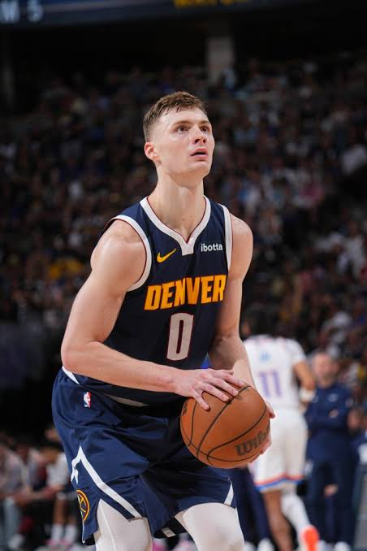
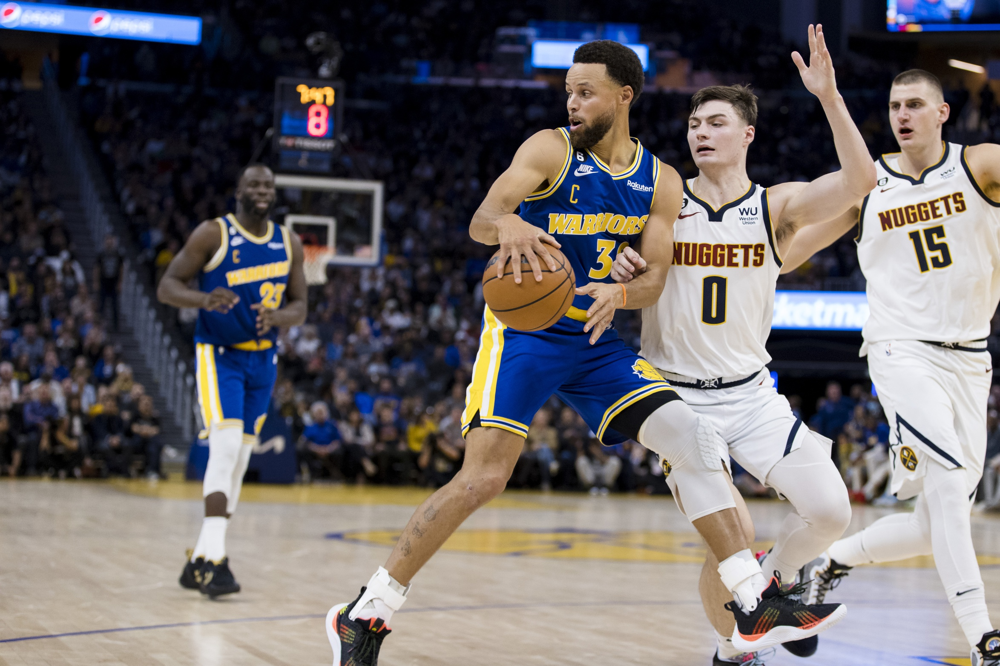

Christian Nicholas Braun (Burlington, Kansas, 17 de abril de 2001) es un jugador de baloncesto estadounidense que pertenece a la plantilla de los Denver Nuggets de la NBA. Con 1,98 metros de estatura se desempeña en la posición de escolta. Jugó al baloncesto universitario con los Kansas Jayhawks, ganando el campeonato nacional universitario (NCAA) en 2022.
Fue seleccionado en la vigésima primera posición del Draft de la NBA de 2022 por Denver. En su primer año como novato en la liga, destacó por su alta energía defensiva, capacidad para correr el contraataque y madurez táctica saliendo desde el banquillo.
Al ganar el campeonato de la NBA en 2023 con Denver, se convirtió en uno de los pocos jugadores en la historia del baloncesto en ganar el título universitario de la NCAA y el anillo de la NBA en años consecutivos, confirmando su reputación como un jugador ganador.

